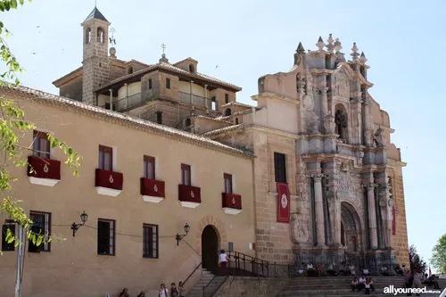

Su historia arranca en plena época islámica, cuando se levantó una pequeña fortificación (hisn) en lo alto del cerro. Sin embargo, el gran impulso llegó tras la Reconquista, cuando pasó a manos de la poderosa Orden de Santiago en el siglo XIII. Los caballeros ampliaron y transformaron el castillo para convertirlo en una fortaleza defensiva clave en la frontera con el Reino Nazarí de Granada.Dentro de sus murallas se construyó más tarde la imponente Basílica-Santuario que custodia la célebre Vera Cruz.
Hoy en día es el gran símbolo de la ciudad y el epicentro de las famosas Fiestas de la Vera Cruz (con sus mundialmente conocidos Caballos del Vino). Funciona como un vibrante centro cultural, un museo de historia y arte sacro, y un punto de peregrinación ineludible que atrae a miles de visitantes cada año.